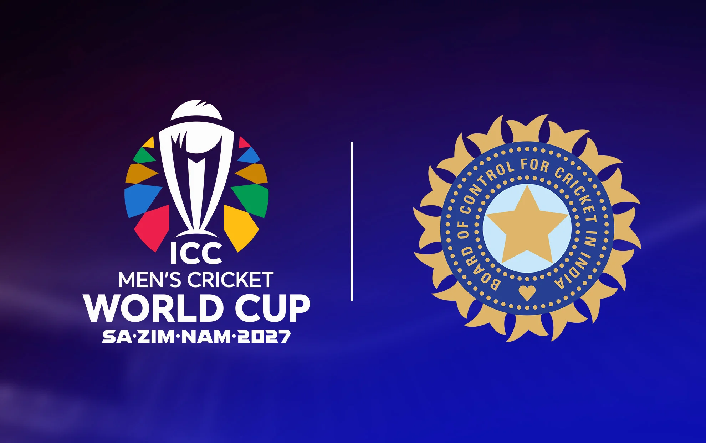

ICC World Cup 2027 · South Africa, Zimbabwe, Namibia
India's Journey to World Cup 2027
Follow the road to the biggest cricket tournament of 2027 with expert analysis, player stories, tactical previews, and tournament information.
- 14 teamsSuper Series & Group Stage
- Oct 2–Nov 21World Cup dates
- 3 hostsSouth Africa, Zimbabwe, Namibia

Latest analysis
Road to World Cup 2027
0 articles
Predicted selection
India's Predicted Playing XI – World Cup 2027
This lineup is a prediction and not an officially selected team.
 1
1
Rohit Sharma
Opening Batsman
India's most dynamic opener, Rohit combines explosive powerplay starts with calm leadership and a proven record in major tournaments.
View Profile 2
2
Shubman Gill
Opening Batsman
A technically crisp opener, Gill brings elegant stroke play, long-term consistency, and the ability to control the innings from the top.
View Profile 3
3
Virat Kohli
Top-Order Batsman
Kohli's experience, technical discipline, and match-winning temperament make him a central figure in any World Cup campaign.
View Profile 4
4
Shreyas Iyer
Middle-Order Batsman
Iyer adds power, composure, and adaptability in the middle order, especially when India need to accelerate under pressure.
View Profile 5
5
KL Rahul
Wicketkeeper-Batsman
Rahul offers flexibility behind the stumps and a reliable batting option capable of anchoring or accelerating as required.
View Profile 6
6
Hardik Pandya
All-Rounder
Pandya's finishing ability, seam bowling, and fearless approach provide India with a game-changing balance option.
View Profile 7
7
Ravindra Jadeja
All-Rounder
Jadeja adds elite fielding, control with the ball, and the ability to influence matches in both the middle overs and the closing stages.
View Profile 8
8
Axar Patel
Spin All-Rounder
Patel offers left-arm spin, lower-order batting depth, and the ability to keep India balanced across all conditions.
View Profile 9
9
Kuldeep Yadav
Spin Bowler
Kuldeep's wicket-taking variety and ability to turn matches make him a major threat in the middle overs.
View Profile 10
10
Jasprit Bumrah
Fast Bowler
Bumrah's precision, pace, and control give India a world-class match-winning option in every phase of the innings.
View Profile 11
11
Bhuvneshwar Kumar
Medium-Fast Bowler
Bhuvi brings swing, discipline, and experienced leadership with the ball, making him an ideal support option for the pace attack.
View ProfileTournament fixtures
Important India fixtures
| Date | Opposition | Venue | Match |
|---|---|---|---|
| October 7, 2027 | Australia | Cape Town | League stage |
| October 10, 2027 | Pakistan | Johannesburg | League stage |
| October 2–November 21, 2027 | 14 teams | South Africa, Zimbabwe, Namibia | World Cup |
About this site
Independent coverage of India's World Cup campaign.
Team India – Road to World Cup 2027 brings together cricket analysis, player profiles, tournament context, and match previews. Articles distinguish confirmed facts, predictions, and opinion so readers can follow the campaign with clarity.
Information about the tournament is based on the official ICC event information: hosts South Africa, Zimbabwe and Namibia; dates October 2 to November 21, 2027; and the 14-team tournament format.
Official tournament information
ICC Cricket World Cup
Use the official event page for the latest schedule, team announcements, and tournament updates.
Stay connected
Contact Team India Cricket Blog
Have questions, suggestions, or feedback about Indian cricket? We'd love to hear from you!